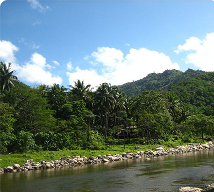
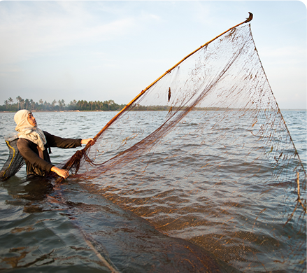
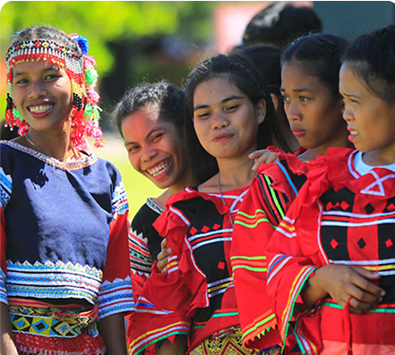
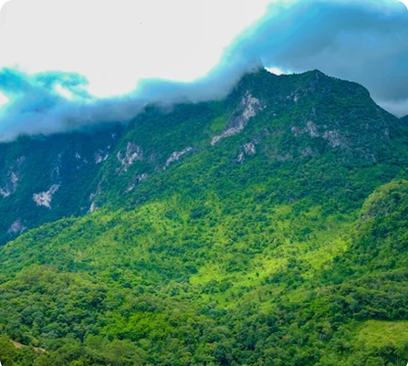

MUNICIPALITY OF KAPALONG
Kapalong, a fast-developing municipality in Davao del Norte, is known for its thriving agriculture, rich biodiversity, and strong indigenous culture. With its vast banana, coconut, and cacao plantations, it plays a crucial role in Mindanao’s agribusiness sector. The town is also home to protected forests, scenic caves, and tribal communities, making it a prime destination for eco-tourism and cultural exploration.

Geography & Area
A Land of Valleys, Mountains, and Rainforests
Kapalong spans 839 square kilometers, featuring fertile lowlands, dense forests, and river systems. The Libuganon River and Taguibo River provide water for irrigation, aquaculture, and hydroelectric power, while the rugged terrains and caves attract adventurers and nature lovers.

Brief History
From Indigenous Lands to an Agricultural Powerhouse
Kapalong was historically inhabited by indigenous Manobo and Mandaya tribes, who practiced hunting, farming, and river fishing. As migrants from Luzon and the Visayas arrived, the town expanded its agriculture, forestry, and trade sectors. Today, Kapalong continues to honor its roots while advancing its economy through sustainable development.

Demographics & Language
A Town of Indigenous and Migrant Communities
Kapalong is home to Cebuano (Bisaya) speakers, Manobo and Mandaya indigenous groups, and migrant settlers from other provinces. Tagalog and English are widely used in education, government, and business, ensuring accessibility for locals and visitors.

Climate & Environment
A Green Haven with Thriving Ecosystems
Kapalong enjoys a tropical rainforest climate, with high annual rainfall that supports its agriculture and forestry sectors. The local government promotes reforestation, river conservation, and eco-friendly farming practices to ensure long-term environmental sustainability.
Reference: davaodelnorte-kapalong